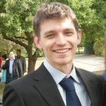
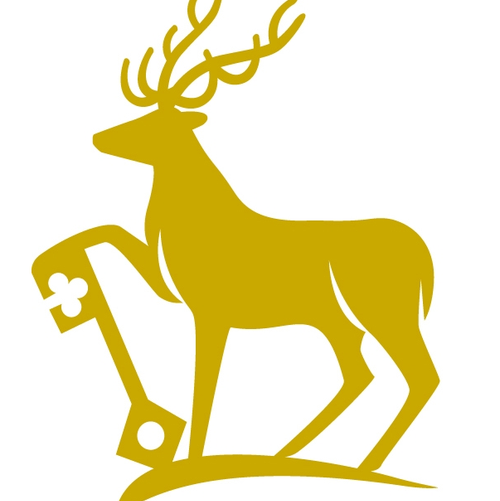
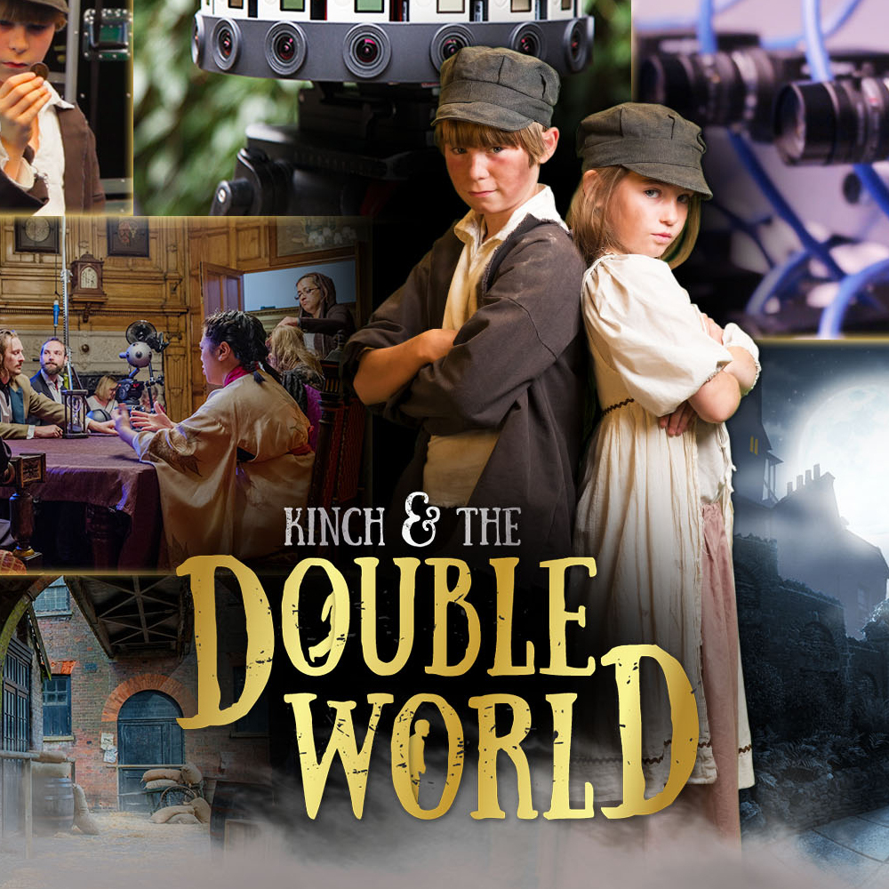
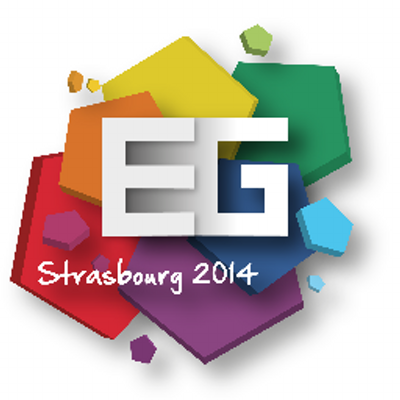

Bio

I am currently a Research Fellow in the Centre for Vision, Speech and Signal Processing (CVSSP) at the University of Surrey . In 2016 I completed a PhD supervised by Prof. Adrian Hilton (Surrey) and Prof. Graham Thomas (BBC R&D). My PhD introduced novel techniques to compactly represent multiple view video to allow efficient free-viewpoint rendering. In January 2013, I undertook a three month internship at BBC R&D in London. I gained hands on experience in the setup and operation of a multiple camera performance capture studio and integrated a novel rendering approach into an existing WebGL based renderer. In June 2015, I spent three months at the Institute of Creative Technologies at the University of Southern California, Los Angeles. During this time, I designed and developed a photogrammetry scanning cage using 100 raspberry pi’s that was used to rapidly generate photo-realistic 3D avatars. In 2011, I obtained a masters degree (MEng) in Electronic Engineering with distinction at the University of Surrey. During the course, I had the opportunity to spend a year working in industry for which I acquired a placement at Sony Broadcast and Professional Research Labs (BPRL), Basingstoke, UK.
For a detailed CV please contact me.
Experience
 |
Research Fellow University of Surrey, UK Jan 2016 - Present |
 |
Visiting Research Scholar University of Southern California, Institute for Creative Technologies, Los Angeles, USA Jun 2015 - Sept 2015 |
 |
R&D Intern British Broadcasting Corparation (BBC) R&D, London, UK Jan 2013 - Apr 2013 |
|
Technical Support Officer Intelligent Systems Research Laboratory, University of Reading, Berkshire, UK July 2010 – Sept 2010 |
|
|
R&D Placement Student Sony Broadcast and Professional Research Laboratories, Basingstoke, UK Sept 2008 – Sept 2009 |
Education
|
PhD Computer Vision and Graphics University of Surrey, UK Oct 2011 - Jan 2016 |
|
|
MEng Electronic Engineering - Distinction University of Surrey, UK Sept 2006 - Jun 2011 |
|
 |
BTec National Diploma Electrical/Electronic Engineering - Triple Distinction Richmond upon Thames College, London, UK Sept 2004 - Jun 2006 |
Projects
 |
Live Action Light Fields for Immersive VR Experiences Innovate UK in collabration with Foundry and Figment Productions Sept 2016 - December 2017 |
 |
Rasberry Pi Photogrammetry Cage for Rapid Avatar Creation University of Southern California, Institute for Creative Technologies June 2015 - Sept 2016 Video |
|
RE@CT FP7 Project in collabration with Artefacto, BBC, INRIA, HHI and Oxford Metrics Group Oct 2011 - Oct 2014 Website |
Publications
2017
 |
4D Temporally Coherent Dynamic Light-field Video A. Mustafa, M. Volino, J. Guillemaut and A. Hilton International Conference on 3D Vision Website |
|
Real-time Full-Body Motion Capture from Video and IMUs C. Malleson, M. Volino, A. Gilbert, M. Trumble, J. Collomosse and A. Hilton International Conference on 3D Vision Website |
2016
|
View-dependent representation of shape and appearance from multiple view video M. Volino PhD Thesis, University of Surrey Website |
2015
 |
RE@CT: A new production pipeline for interactive 3D content F. Schweiger, G. Thomas, A. Sheikh, W. Paier, M. Kettern, P. Eisert, J.S. Franco, M. Volino, P. Huang, J. Collomosse, A. Hilton, V. Jantet, and P. Smyth IEEE International Conference on Multimedia & Expo Workshops (ICMEW) Website |
|
Online Interactive 4D Character Animation M. Volino, P. Huang, and A. Hilton Web3D 2015 Website |
2014
 |
Optimal Representation of Multiple View Video M. Volino, D. Casas, J. Collomosse, and A. Hilton British Machine Vision Conference, 2014 Website |
 |
4D Video Textures for Interactive Character Appearance D. Casas, M. Volino, J. Collomosse, and A. Hilton Computer Graphics Forum (Proceedings of Eurographics 2014) 33(2):371-380, 2014 Website |
2013
 |
Layered View-Dependent Texture Maps M. Volino and A. Hilton Proceedings of the 10th European Conference on Visual Media Production, 2013 Website |
 |
Free-viewpoint video rendering for mobile devices J. Imber, M. Volino, J-Y, Guillemaut, S. Fenney, and A. Hilton In Proceedings of the 6th International Conference on Computer Vision / Computer Graphics Collaboration Techniques and Applications (MIRAGE '13) Website |